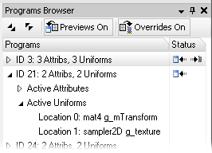

The Programs Browser lists the GPU programs that have been captured from an OpenGLES v2.0-based application running on the connected device.

Basic usage:
• Expand a program's tree node to view details about its uniform and attribute variables.
• Selecting a program will cause the Scrubber's emulator view to highlight all meshes using that program in orange.
• Selecting a program will also cause its shaders to be viewable and editable in the Shaders Viewer.
• When one or more of a program's shaders is modified (see Shaders Viewer), the Programs Browser will indicate so with icons next to the program:
- [] The change is being previewed in the emulator view, but has not been sent to the mobile device
- [ ]
The change is being previewed, and has also been sent to the mobile device to override the applications behavior
]
The change is being previewed, and has also been sent to the mobile device to override the applications behavior
Toolbar options:

Expands or collapses all items in the program list.
Globally toggles on and off the previewing of shader modifications in the emulator view.
Globally toggles on and off the overriding of shaders on the mobile device.
• Globally enabling and disabling shader overrides, while simultaneously capturing FPS and/or other real-time performance metrics, is the most effective way of prototyping shader optimizations.